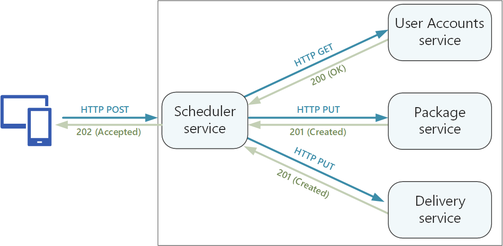
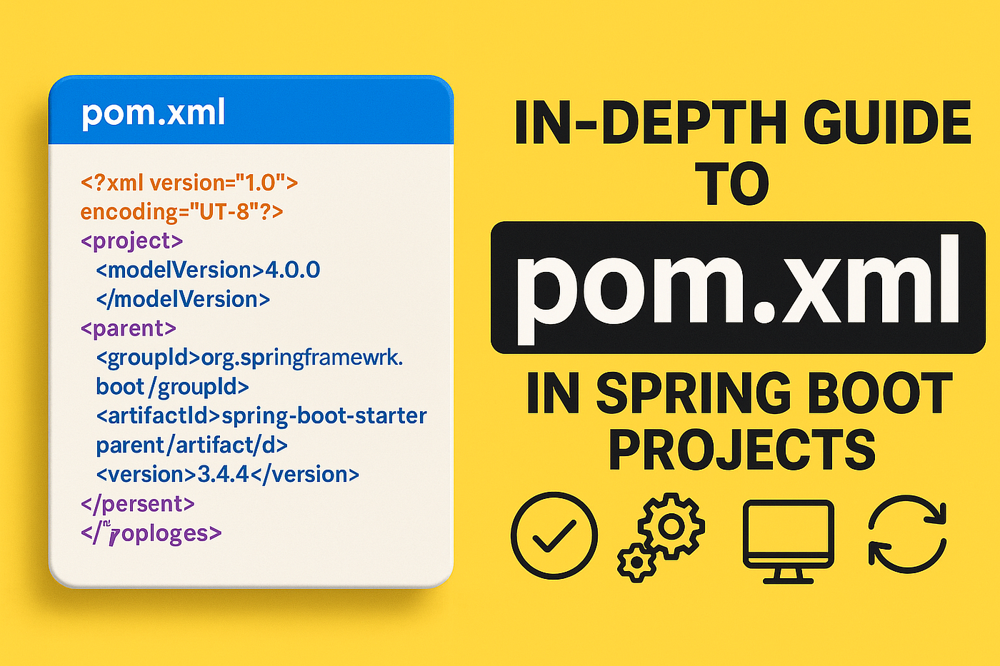
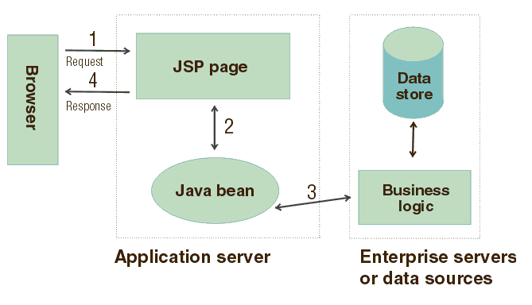

Galería del Proyecto

Diseño de la API REST
Representación visual de los endpoints de la API y su estructura.

Configuración `pom.xml`
Captura de pantalla del archivo `pom.xml` con las dependencias del proyecto.

Flujo de Inyección de Dependencia
Diagrama o código que muestra cómo Spring gestiona las dependencias.

Vista JSP con Datos Dinámicos
Muestra una página JSP renderizada con información proveniente del backend.